BigWorld → Messiah 跨引擎转换方案
为天下系列跨引擎移植「开天计划」自研的两套资源转换方案，均已申请专利。
场景转换方案
背景：天下端游项目组决定在端游（BigWorld）和手游（Messiah）同时推出同一个大场景地图，需要将 BigWorld 场景导入 Messiah，并尽可能保持两端效果一致。
技术原理：在 Messiah 端开发与 BigWorld 功能对应的地形 Shader；转换工具读取 BigWorld 地形数据并转为 Messiah 地形数据，读取旧场景模型 Transform 信息后导入新引擎，最终实现场景与地形的跨引擎转换。
模型合并与材质去重：端游模型拆分非常细碎，一个建筑可能由几十个子模型组成，合并为大模型后材质 ID 暴增；工具会检查合并后模型引用的贴图，对引用相同贴图的材质 ID 进行合并去重。
贴图合并与 UV 整理：端游贴图多为 512x512 或更小的四方图、256x512 或更小的长图，工具会合并贴图，并整理引用这些贴图的材质 ID 对应的 UV。
地形混合：Messiah 地形采用 IndexMap（无混合图）方案，在 Shader 内做特殊处理自混合；为保持一致，移植 BigWorld 地形 Shader，使用两张贴图八个通道进行地形混合，地形种类沿用 Messiah 的 Index 方式，并对悬崖峭壁采样做特殊处理，相关信息记录在 Chunk 信息图中。
结果：最终结合 Messiah 原有 IndexMap 与 BigWorld 的 SplatMap 方案，实现两端效果一致。
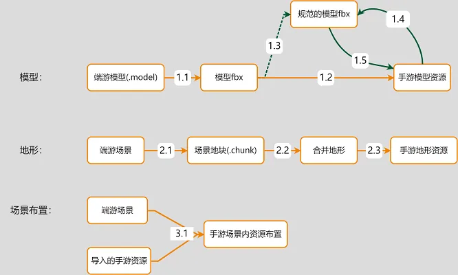

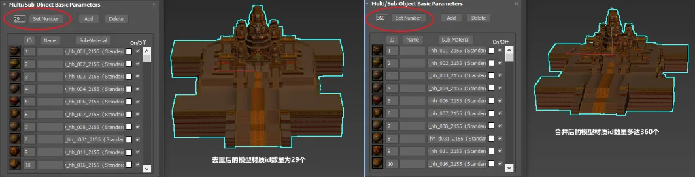
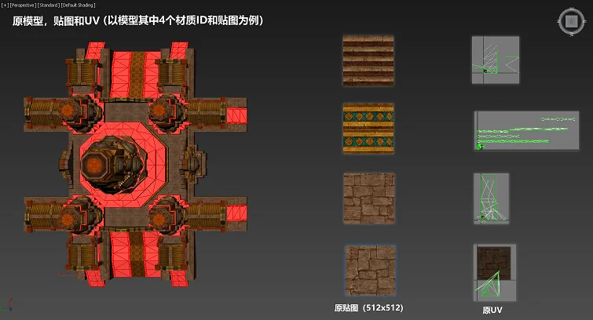
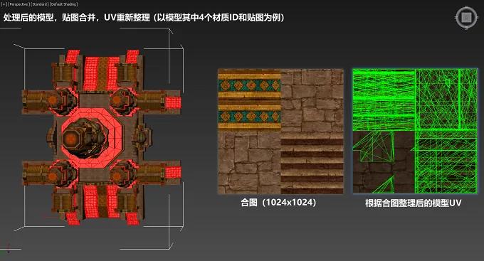
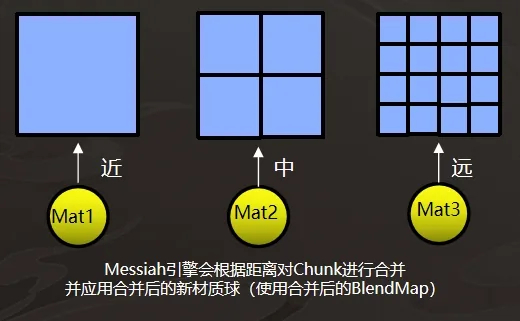
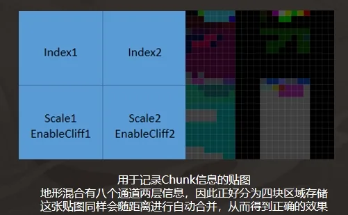
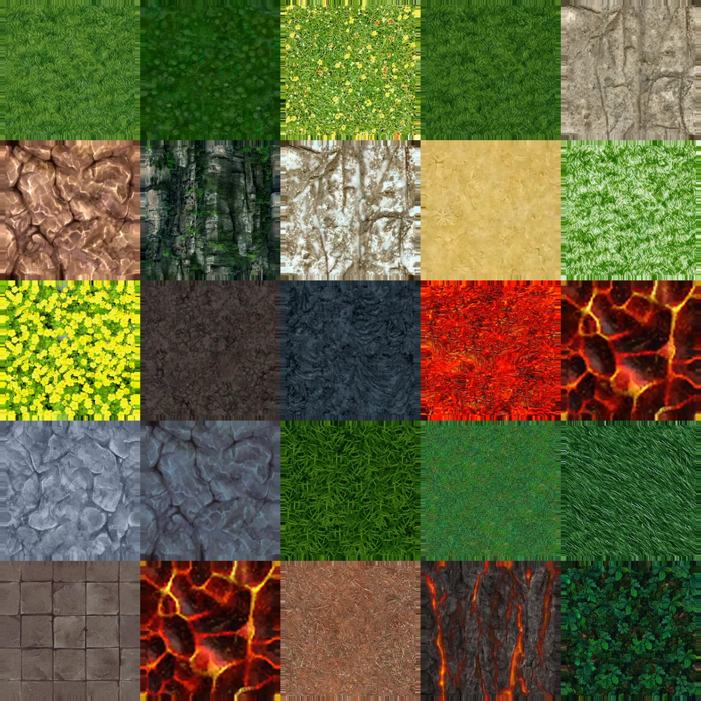
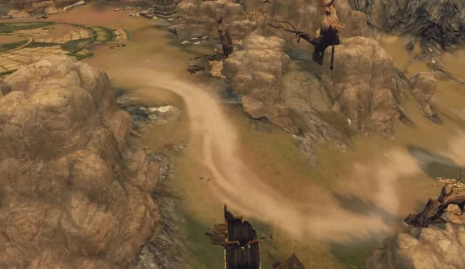
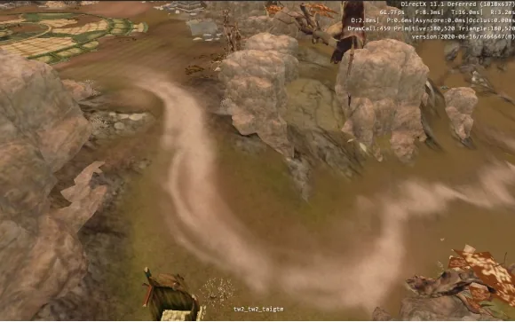
粒子特效转换方案
背景：提供 BigWorld → Messiah 的粒子特效转换工具，用户只需配置几个路径即可一键转换，还原度较高，仅需少量后续调整即可使用。
技术原理：两边引擎都使用 XML 记录粒子特效信息，且部分组件参数类似；工具解析 BigWorld 的 XML 后先与 Messiah 通信，把贴图资源信息作为参数发送过去，调用接口导入贴图并新建粒子，再通过 ModelLib 导入模型资源，最后整合 BigWorld 的 XML 信息与导入的贴图、模型，构建 Messiah 粒子 XML。
效果：整体转换可替代约 80%–90% 的人工制作环节，部分简单特效可达到 100% 转换。
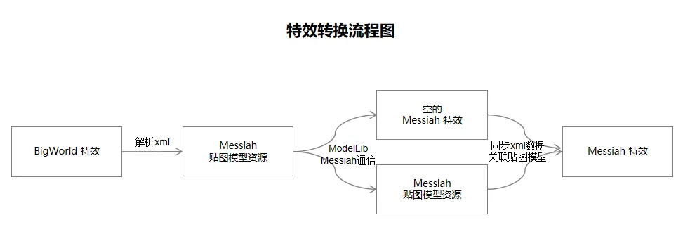
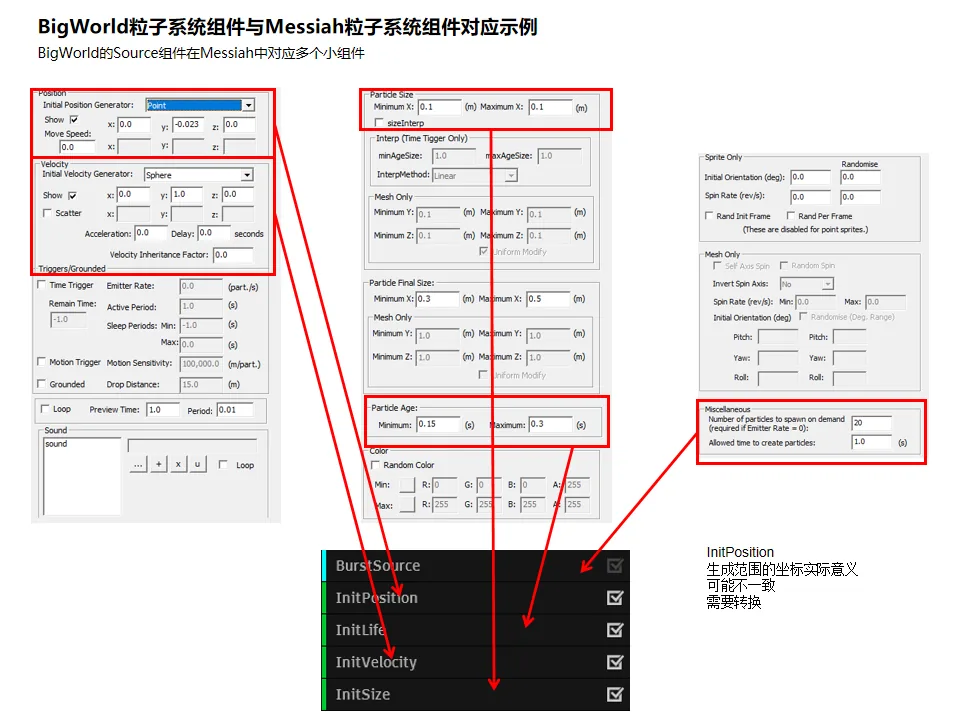
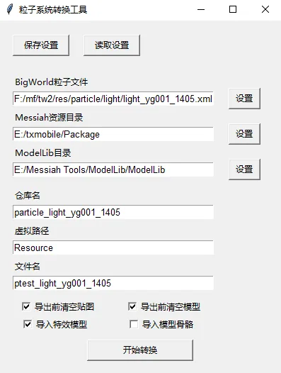